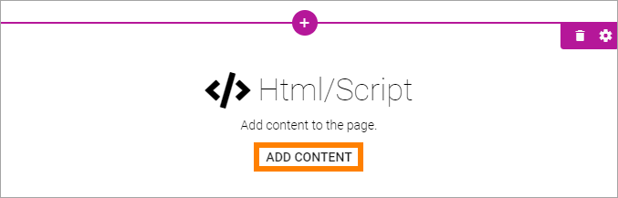
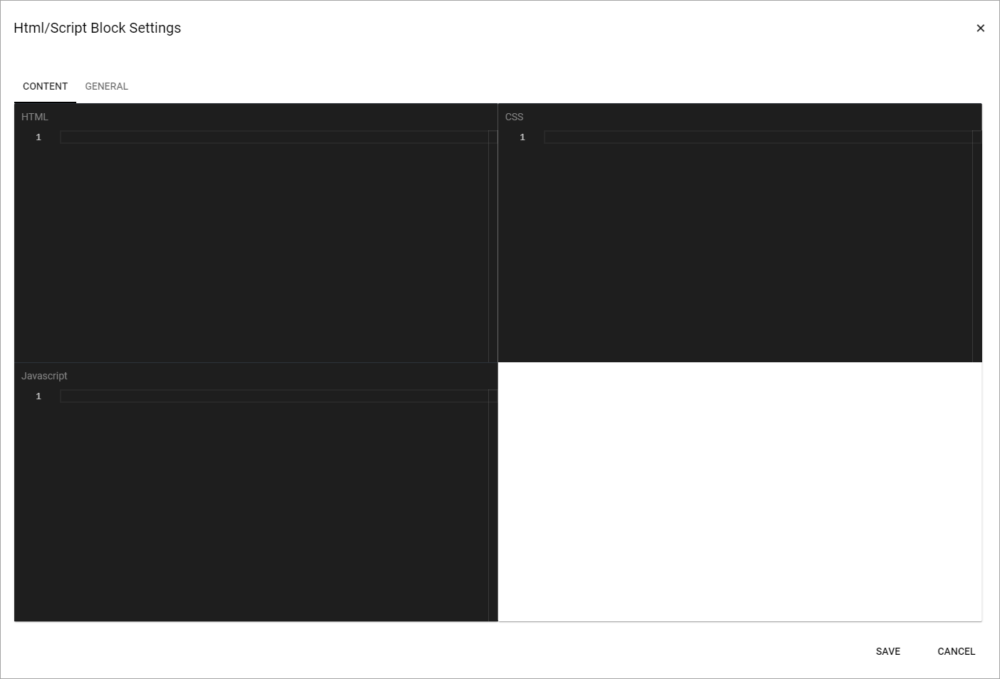

HTML/Script¶
HTML/Script is a block you can use for various applications to add extra functionality or content to a page. One example is to add the code for a video, from YouTube, or some other source.
To add HTML code, click “ADD CONTENT”.
When you click “ADD CONTENT” the following is shown:
- HTML: Add HTML here.
- CSS: To set CSS for the content in this field, add it here.
- Javascript: If Javascript is needed/used, add it here.
General settings¶
The following settings are available when editing HTML/Script:

- Title: Add a title for the contents in the field, if needed.
- Title Overaly: If a Title Ovarley is needed, add it in this field.
- Hidden block: (A description will be added soon)
- Run in iFrame: Per default, the HTML/Script you add here are run in iFrame. If needed this option can be deselected.
- iFrame Height: If “Run in iFrame” is selected you can set the iFrame Height.
- Run Script in Edit Mode: (A description will be added soon)